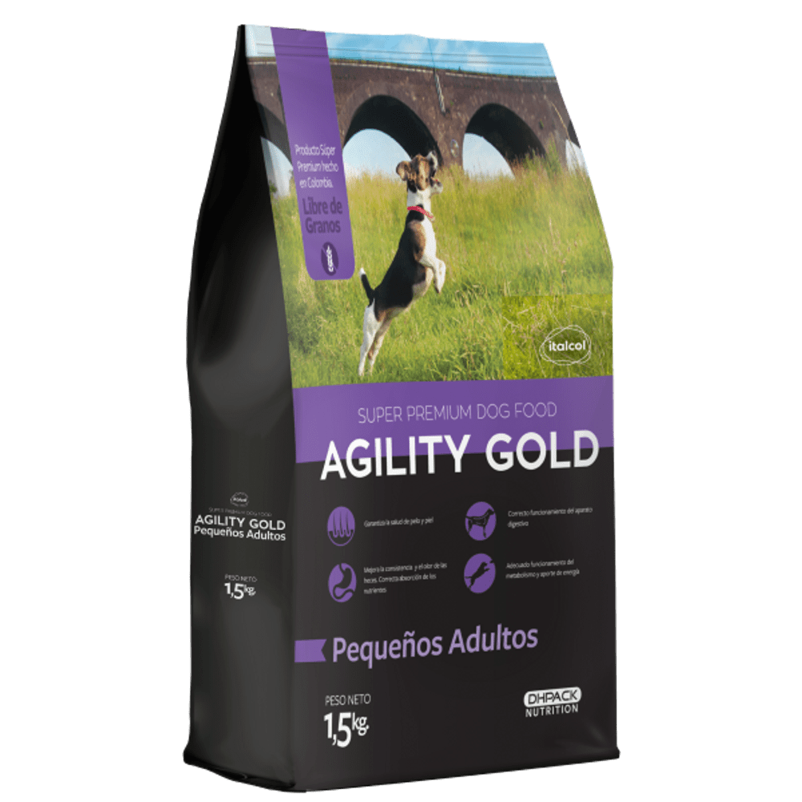

La alimentación de un perro es la base
para poder vivir
y dependiendo de ella, la salud del animal variará para bien o para mal.
Los perros en un principio eran carnívoros. Pertenecen a la especie canis familiaris y están incluidos
en el grupo de los carnívoros, dónde también se encuentran los lobos, los osos, los gatos, y otros
muchos animales.
Pero desde que se hizo amigo del hombre, ha cambiado sus hábitos alimenticios. Ya no son unos carnívoros
estrictos y su capacidad metabólica ha cambiado, pero su alimentación sigue siendo mayoritariamente de
carne. Lo cierto es que el perro actual es prácticamente omnívoro.
Lo básico
Dejando a un lado los nutrientes básicos necesarios para todo animal (agua, albúmina, hidratos de
carbono, grasas y sales) son también imprescindibles las vitaminas. Si el aporte de nutrientes y energía
es inadecuado, la salud de nuestra mascota no será buena. Y esta incorrecta alimentación le provocará,
tarde o temprano, a nuestro perro la aparición de patologías.
Hay que tener en cuenta que los mecanismos fisiológicos del perro y del hombre son parecidos, pero
distintos. Hay algunos alimentos que el perro no es capaz o no puede metabolizar de la misma manera que
lo hace el hombre. Su metabolismo no es tan eficaz como el del ser humano. Sabiendo esto, se puede
evitar cometer errores en la alimentación
Errores más frecuentes
Muchos dueños no se fían de las dietas comerciales debido a que
creen que sus componentes no son naturales. En vez de eso, lo que hacen es prepararles ellos mismos las
comidas, pues creen que si a ellos les sienta bien, a sus mascotas también. Pero esto es erróneo. Como
acabamos de decir en el apartado anterior, el metabolismo de los perros es diferente del de los humanos.
El problema no es alimentarles con alimentos frescos, que son buenos, sino la cantidad y proporción de
nutrientes que les debemos suministrar y que estos necesitan. Los productos comerciales están hechos por
nutricionistas y contienen la información sobre las cantidades adecuadas para cada perro. Los productos
llamados "Premium" tienen este nombre por su mayor digestibilidad para los animales y, evidentemente,
por su mayor calidad.
Diferentes soluciones y consejos
Teniendo en cuenta todo esto, ya podemos actuar de forma correcta. Una vez elegido el tipo de dieta que
va a seguir, debemos asegurarnos de que sea la mejor posible. Debe ser agradable al gusto del perro. Esto
será más fácil con los productos comerciales, como ya he dicho antes, pues viene detallado todos los
componentes y las raciones a proporciona a la mascota.
Es muy importante concientizar a todos los miembros de la familia en estabilizar y no cambiar la dieta
alimentaria de la mascota. Lo aconsejable es darle de comer después de que la familia haya comido para
instaurar la dominancia en el dueño. Si se hace al revés, el perro comenzaría a tener comportamientos
dominantes. El lugar donde se le debe poner el plato debe ser tranquilo. Nos debemos asegurar que no se
lleve la comida a otro sitio y tampoco quitársela a mitad de la comida, pues provocara ansiedad en el
perro, incluso agresividad.
Por último, y como es normal, en caso de dudas es recomendable preguntar a nuestro veterinario, que nos
puede aconsejar en todo momento de cualquier cuestión que nos surja. Él será el mejor para aconsejanos a
la hora de cambiar la dieta de nuestro perro, si queremos que adelgace algunos kilitos o que engorde otros
tantos.
PRODUCTOS
Wow Can
Adult Mini Obesity Turkey Delight Wow Can Sabor Surtido-30 Un
10000
Wow Can
Alimento crudo para perro Whole Barf Tasty Buffalo-500 Gr
10000
Wow Can
Pack Alimento Hùmedo para perro Wow can Carna-12 Un
10000
Wow Can
Alimento Húmedo para perro Pixie Dieta De Carne De Res Al Horno-500 Gr
10000
Wow Can
PUPPY FLAVOURS OF THE FARM
10000
Wow Can

Alimento Para Perro Agility Gold Pequeños Adultos -1.5 Kg
 La importancia de una buena alimentación
La importancia de una buena alimentación La alimentación de un perro es la base
para poder vivir
y dependiendo de ella, la salud del animal variará para bien o para mal.
La alimentación de un perro es la base
para poder vivir
y dependiendo de ella, la salud del animal variará para bien o para mal.  El problema no es alimentarles con alimentos frescos, que son buenos, sino la cantidad y proporción de
nutrientes que les debemos suministrar y que estos necesitan. Los productos comerciales están hechos por
nutricionistas y contienen la información sobre las cantidades adecuadas para cada perro. Los productos
llamados "Premium" tienen este nombre por su mayor digestibilidad para los animales y, evidentemente,
por su mayor calidad.
El problema no es alimentarles con alimentos frescos, que son buenos, sino la cantidad y proporción de
nutrientes que les debemos suministrar y que estos necesitan. Los productos comerciales están hechos por
nutricionistas y contienen la información sobre las cantidades adecuadas para cada perro. Los productos
llamados "Premium" tienen este nombre por su mayor digestibilidad para los animales y, evidentemente,
por su mayor calidad.